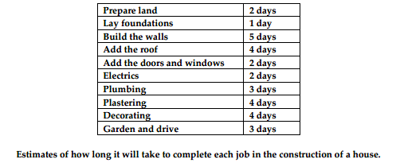
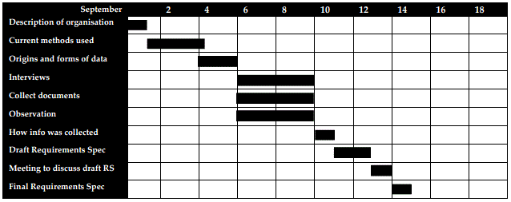

<div id="jsn-maincontent" class="span9 order1  row-fluid">
					<div id="jsn-maincontent_inner">
						<div id="jsn-centercol"><div id="jsn-centercol_inner">
									<div id="jsn-mainbody-content" class=" jsn-hasmainbody">
								<div id="jsn-mainbody-content-inner1"><div id="jsn-mainbody-content-inner2"><div id="jsn-mainbody-content-inner3"><div id="jsn-mainbody-content-inner4" class="row-fluid">
								
										
								
								<div id="jsn-mainbody-content-inner" class="span12 order1 ">
		
										<div id="jsn-mainbody">
										<div id="system-message-container">
	</div>

										<div class="item-page" itemscope itemtype="https://schema.org/Article">
	<meta itemprop="inLanguage" content="en-GB" >
	
		
						
		
	
	
		
								<div itemprop="articleBody">
		<p></p>
<h1 style="text-align: center;">Gantt charts</h1>
<p><strong>Gantt charts<br></strong>Gantt charts show you in an instant if a project is on schedule. Consider building a house. A Project Manager would start by writing down each of the stages and then estimating how many days it would take them to complete that stage.</p>
 
<p>&nbsp;</p>
<p>If you did one job after another in sequence, you could add up how long each job would take to build the house - 30 days. On the other hand, if all the tradesmen could work at the same time, then to build the house would take only as long as the longest&nbsp;job - 5 days. In fact, some jobs have to finish before others begin whilst others can be done at the same time. For example,</p>
<ul>
<li style="list-style-type: none;">
<ul>
<li>You cannot do the foundations until the ground has been prepared.</li>
<li>You cannot build the walls until the foundations are complete.</li>
<li>You cannot decorate until the walls have been plastered.</li>
<li>The roof, plumbing, electrics, doors and windows can all be done at the same time, as soon as the walls are built.</li>
<li>You can start the garden and drive (arguably) as soon as the foundations have been laid and at the same time the walls are being built.</li>
</ul>
</li>
</ul>
<p>So how do you estimate how long the house will take to build? You produce a Gantt chart. This chart plots the jobs against the number of days each job will take and takes into account when a job can be started. This is shown in the following Gantt chart for the house-building project.</p>
<p>&nbsp;</p>
<p>The job starts at day zero. The first job is to prepare the land. That takes two days. When the land is prepared, the foundations are laid, which takes one day. Then both the walls and the garden/drive jobs can be started. The walls take 5 days but as soon as they are complete, the plumbing, electrics, roof, doors and windows jobs can be started. The moment that the plumbing is done, the plastering can start. This will take 4 days, after which, the decorating can start. This will take a further 4 days. To build this house should take 19 days.</p>
<p><strong>How can the Gantt chart be used to help the Project Manager?</strong><br>The above example has been simplified. Although we have described the most important part of what Gantt chart software will do, other facilities in Gantt chart producing software are usually provided. To summarise, Gantt chart software applications:</p>
<ul>
<li style="list-style-type: none;">
<ul>
<li>Provide a Project Manager with a visual representation of the tasks in a project. It is faster and easier to ‘understand’ what must be done in a complicated project if you have a diagram rather than a written description, for example.</li>
<li>Provide a Project Manager with a visual representation of how tasks are related to each other, what tasks must be completed before others begin.</li>
<li>Tell a Project Manager how long each task should take (as well as best and worse times) and start and finish dates.</li>
<li>Allow a Project Manager to enter in a ‘percentage completed’ value for any task at any time. A visual representation of this can then be provided. This is very important when many jobs ar e happening at the same time.</li>
<li>Allow a Project Manager to produce a ‘Master List’ of resources that may need to be used in a project (such as a labourer, a plumber, a scanner, a Video Conferencing suite, a forklift truck and so on.) As well as producing a Master List of resources, the Project Manager can assign a Cost per Day to each of those resources.</li>
<li>Allow a Project Manager to assign resources (not just equipment but also skilled people) to each task and to then decide when they need to be used (and be on-site) and when they should be finished with.</li>
<li>Allow reports to be automatically generated. The most obvious one is a report on the cost of each task (calculated from the cost of each resource assigned to each task) and the total cost of the project.</li>
<li>Allow ‘milestones’ to be set so that automatic reviews are triggered.</li>
<li>Allow changes to be made to the project resulting in automatic recalculations of timescales and reports to be done.</li>
</ul>
</li>
</ul>
<p>The chart will help the Project Manager in many ways.</p>
<ul>
<li style="list-style-type: none;">
<ul>
<li>They ensure that a Project Manager thinks methodically about the tasks that need doing, and the costs and time scales involved.</li>
<li>They will be able to tell the contractors when they need to come on site - that information is clear from the Gantt chart. They will also be able to book resources that are needed in advance, such as a forklift truck or a contractor skilled in writing VB applications.</li>
<li>If the project is falling behind schedule, this can be picked up early and action taken to bring the project back on schedule. After day 8, for example, the Project Manager can compare what jobs have actually been completed with the Gantt chart timetable. If the walls haven't been finished after 8 days, then all of the other jobs will slip back and the house will take longer to build. The manager could decide to get some extra workers in to get the job done, for example.</li>
<li>The Project Manager will be able to keep a tighter control on costs. They will be able to compare how much each task actually cost to complete against the cost calculated automatically by the Gantt chart software. It is crucial to the success of a project that any financial concerns are identified as soon as possible.</li>
<li>They are simpler to produce and clearer than the more complicated Critical Path Analysis diagrams.</li>
</ul>
</li>
</ul>
<p><strong>How can a Gantt chart help you plan a Computing project on your course?</strong> <br>It would be very sensible to use a Gantt chart to help you plan you Computing project. If Day Zero was the end of August / the beginning of September, the first part of your Gantt chart might look like this:</p>
<p></p>
<p>This tells you that your project starts at the beginning of September. By the end of the first day, you should have described the organisation that you are doing a project for. By September 4th, you should have written up the way things are currently done and by the 6th, you should have done tables that describe each piece of data used in the current system; where it comes from, its data type and validation rules, who uses it and why and so on. By the 10 th, the information collecting should have been completed and documented and by the 15th, the Requirements Specification should have been approved by the customer and be&nbsp;in your folder. You should be ready to move on to the Design stage of your project by the 15 th September and if you are not then you need to think hard about what to do to get back on track. For each task, you will also have allocated resources. This means&nbsp;that you will have identified the hardware, software and people you need access to, to help you complete each stage. You should produce a Gantt chart for your entire project before you begin. Your teacher will have told you what the start and&nbsp;finish date is. Producing a Gantt chart will really help you to focus on splitting up all of the jobs that have to be done to meet the deadline and the length of time each one is likely to take. If you then constantly refer to your Gantt chart, updating the % of each task as it is completed, you will be able to see the moment your project runs into difficulties and will be able to have a&nbsp;burst of energy to get it back on track. Don’t worry too much if you find it difficult to estimate how long a task should take. This is largely down to experience. However, the next time you do a project, perhaps at university or with a company, you will find it much easier to estimate tasks.</p>
<p><strong>Some problems with Gantt charts</strong><br>Gantt charts aren't the answer to everything, though! It can be difficult to estimate how long jobs will take and drawing a Gantt chart assumes that the Project Manager can estimate the time each task takes reasonably accurately. Estimating how long jobs take improves with experience but it is always difficult! The most important drawback with Gantt charts, however, is that they&nbsp;don't tell you which jobs MUST get finished on time, or the whole project will fall behind. Some jobs are critical and must get done on time. For example, in the house-building example, getting the walls built might be deemed critical because so many&nbsp;other jobs depend on that one getting done on time. If the garden and drive take a little longer than planned, then the project can still be finished on time - it isn’t a critical task. Gantt charts do not highlight which jobs are critical. Another method is needed for this. It is known as Critical Path Analysis, or CPA.&nbsp;</p>
<p></p>	</div>

	
							</div>

									</div>
				
							</div>
							
				        							
							
							</div></div></div></div></div>			
							
							
		        				</div></div> 
				</div></div>